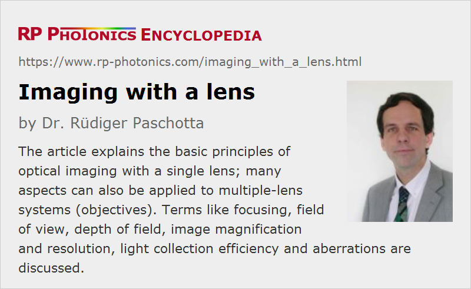

Imaging with a Lens
Definition: creation of an optical image using a single lens
More general term: imaging
German: Abbildung mit einer Linse
Categories: general optics, vision, displays and imaging, methods
How to cite the article; suggest additional literature
Author: Dr. Rüdiger Paschotta
This article explains the basic working principles of producing optical images with a single lens, as e.g. used in various types of cameras. Most of the aspects are essentially the same when using a multiple-lens system, for example a photographic objective or a microscope objective.
Essentially, the generation of an optical image means that light received from points of an object is sent to different points on some image plane, where one may place a photographic film, an electronic image sensor or a screen, for example. (Three-dimensional imaging is not considered in this article.)
The simplest possible method of optical imaging, which does not require any lens, but only a pinhole, has been realized with the camera obscura. This method has the severe disadvantage, however, that it involves a serious trade-off between resolution and light collection. One usually requires some method which can collect light from a larger area while maintaining high image resolution. The simplest approach with that combination of qualities is based on a single lens, as shown in Figure 1.
Some of the light emitted from a particular point in the object plane (e.g. by scattering of illumination light on the object) gets to the imaging lens, which focuses it to a corresponding point on the image plane. Note that light from the object may be radiated in all kinds of other directions; Figure 1 shows only the light which hits the entrance aperture of the lens.
The obtained image is inverted; for example, points at a lower position on the object are imaged to points at a higher position in the image. That image inversion does not matter for recording images with photographic film or an image sensor, but it can be a problem for direct viewing. Therefore, one may use additional optics, for example in an SLR photo camera a pentaprism for obtaining an upright image in the viewfinder. Similar techniques are used in some microscopes, particularly in manipulation microscopes.
Field of View
For a given size of an electronic image sensor, for example, the angular range over which object points can be imaged (the field of view) is approximately twice the arctan of half the sensor dimension divided by the focal length. For example, a 24 mm wide image sensor (DX format) combined with a 25-mm lens will result in a field of view of ≈0.90 rad, which is approximately 51°. That value is similar to the viewing angle of the human eye, and therefore standard objectives work with such values.
Using the same image sensor in combination with a tele lens, having a larger focal length, the field of view is correspondingly smaller, i.e., one can image more distant objects.
If one could increase the sensor size accordingly while maintaining its pixel spacing unchanged, one could image a wider range with the same resolution. Usually, however, a photo camera works with a fixed image sensor, and only the photographic objectives can be exchanged. Even if one could insert a larger image sensor, the objectives may not be designed for good compensation over its full range.
Condition for Obtaining Sharp Images
The imaging produces ideally sharp images only if the lens equation is fulfilled:
where a is the distance from the object to the lens, b is the distance from the lens to the image plane, and f is the focal length of the lens.
The symmetrical situation with a = b = 2 f leads to the smallest possible distance a + b = 4 f between object and image, and to a magnification of −1.
For imaging of very distant points, i.e., cases with a ≫ f, the object is essentially “at infinity”; the lens equation then shows that the image plane should lie in the back focal plane of the lens (b = f). For objects at finite distances, however, the image plane needs to be placed in a somewhat larger distance (b > f). (One may consider that the divergence of the incoming light “consumes” some of the focusing power of the lens, so that less of it is left for focusing the beam again.) An imaging device such as a camera often contains some adjustment knob with which one can slightly move either the image sensor or the lens in order to fulfill the focusing condition for a particular object distance. This is essential for photo cameras, for example.
Depth of Field
If the focusing condition is not exactly fulfilled, the light received from a particular object point will be sent to a larger area on the image plane, called the circle of confusion (see Figure 4). This results in a reduction of image resolution – which can be a lack of image quality, but it sometimes intentionally used for artistic purposes – see Figure 5 as an example.
The depth of field (DOF) is the range of object distances for which reasonably sharp imaging is achieved with a particular setting of the camera, i.e., with a particular distance between lens and image plane. This depends on several factors:
- If one uses a diaphragm (a type of aperture) just before or after the lens, this reduces the area to which light from one object point is sent, at least as long as diffraction effects are not substantial. For example, reducing the average diameter by a factor of two gives one twice the depth of field. However, that also implies a reduction of the light collection efficiency by a factor of 4, which may have to be compensated with an increased exposure time e.g. in case of a photo camera.
- The depth of field is approximately proportional to the square of the object distance, i.e., it becomes very large for large object distances. This is because the objects are then close to infinity, all requiring the image plane to be close to the back focal plane. However, the acceptable size of the circle of confusion may actually get smaller for distant objects, so that the dependence of the depth of field on the distance is actually weaker.
- Using a lens with smaller focal length can also increase the depth of field. For a fixed f-number (focal length divided by aperture diameter), the depth of field is inversely proportional to the square of focal length, assuming that the allowed diameter of the circle of confusion stays constant (e.g. due to an unchanged pixel size of the image detector). When changing the f-number such that the aperture size remains constant, the depth of field is only proportional to the inverse focal length (not its square). Note, however, that the modified focal length also affects the field of view (for a given sensor size) and the resolution of object details. For a constant object detail resolution and constant aperture diameter, the depth of field no longer depends on the focal length.
- The depth of field is increased when a larger circle of confusion is acceptable, e.g. when using an image sensor with lower resolution.
Figure 6 shows how the diameter of the circle of confusion for an example case with focusing to three different distances. One can see that the distance range with good sharpness is much larger when focusing to a large distance.
The hyperfocal distance is defined as the distance beyond which acceptable focusing is achieved for all objects without further focus adjustment. Objectives with small focal length exhibit a small hyperfocal distance. It then becomes easier e.g. to obtain a photograph with good sharpness for some foreground object as well as for a distant background.
Indirectly, the format of the image sensor can influence the depth of field: the larger the sensor, the larger the required focal length for a certain angular viewing range, and that in turn reduces the depth of field.
Depth of Focus
The depth of focus is the range in which the position of the image sensor can be varied without substantially losing focus. It determines how precisely that distance needs to be adjusted for a given object distance. In many practical cases, the depth of focus is far smaller than the depth of field.
The depth of focus is also relevant for the question what amount of tilt of the image sensor is tolerable, because that effectively changes the distance of various image points to the plane of the lens.
Image Magnification
The photographic image magnification M is defined as the ratio of image size to object size. It is easy to see that this is equal to the ratio b / a, with a and b defined as above. Using the lens equation (i.e., assuming perfect focusing), one can transform this further:
This shows that the magnification is not determined by the focal length f alone. In a photo camera, for example, it also depends on the distance to the object: the larger that distance, the smaller the magnification. Note that photographic objectives are optimized for operation beyond a certain minimum distance; when trying to focus on closer objects by increasing the lens–sensor spacing, various kinds of optical aberrations might no longer be well corrected.
In photography, the magnification is usually well below unity, since one uses relatively small pieces of film or image sensors for taking images of large objects. Of course, one may later produce printed images with larger sizes, or display images on large computer screens or with image projectors. In that sense, the magnification is not relevant for the user.
Image Resolution and Aberrations
Of course, the imaging is never perfect, e.g. in the sense that light from one object point would be sent exactly to only one point (of infinitely small size) on the image plane. Therefore, there is a minimum distance between points in the object plane which can still be resolved in the image.
A fundamental physical factors limiting the image resolution is diffraction at the aperture. As already mentioned above, operation with small aperture diameters can seriously limit the resolution, although at the same time it leads to a large depth of field. That effect cannot be altered with any optics design.
Another possible resolution limit can be on the side of the detector. Photographic films – particularly those with high sensitivity – set such limits, and electronic image sensors as well through their finite pixel spacing.
In addition, limitations of the optical performance of the objective can cause various kinds of optical aberrations which also limit the resolution.
Which factor is the finally limiting one e.g. in photography often depends on the situation, e.g. the choice of objective, adjustment of a zoom objective, choice of f-number, etc.
Light Collection Efficiency
If we assume for simplicity that the object uniformly sends light in all directions, the optical power received by the lens is proportional to the usable entrance area of the lens and inversely proportional to the square of the object distance. Obviously, a larger lens can collect more light and therefore produce a brighter image. In photography, for example, this means that pictures can be taken with a smaller exposure time, which may be advantageous e.g. to avoid any blurring of images related to movements of the object or the camera.
Questions and Comments from Users
Here you can submit questions and comments. As far as they get accepted by the author, they will appear above this paragraph together with the author’s answer. The author will decide on acceptance based on certain criteria. Essentially, the issue must be of sufficiently broad interest.
Please do not enter personal data here; we would otherwise delete it soon. (See also our privacy declaration.) If you wish to receive personal feedback or consultancy from the author, please contact him e.g. via e-mail.
By submitting the information, you give your consent to the potential publication of your inputs on our website according to our rules. (If you later retract your consent, we will delete those inputs.) As your inputs are first reviewed by the author, they may be published with some delay.
See also: lenses, cameras, image planes, focal length, f-number, field of view, depth of field, depth of focus, hyperfocal distance, optical aberrations
and other articles in the categories general optics, vision, displays and imaging, methods
|  |
If you like this page, please share the link with your friends and colleagues, e.g. via social media:
These sharing buttons are implemented in a privacy-friendly way!